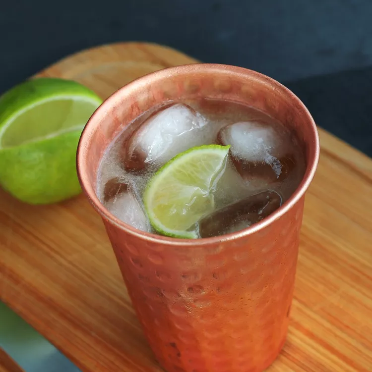

Moscow Mule
A Moscow mule is a vodka-based cocktail made with lime juice and ginger beer. Though the drink is associated with Russia (for obvious reasons), it's actually an American invention that dates back to the 1940s. Moscow mules are served in copper mugs because the cold metal insulates the liquid inside, keeping the cocktail cool and refreshing.